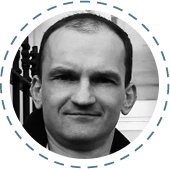

Команда GeekHub
-
Євген “Jack” Григор’єв
Старший девелопер PHPв Мaster of Code
Працює з рядом технологій, включаючи Symfony, Drupal, jQuery, Compass CSS, HAML, etc. Майстерність Євгена стоїть за такими проектами як Belvilla, Yes or No, Jongenvrij webshop, USGA та багато інших. У Geekhub Євген викладає Advanced CMS.
-
Тимофій “Common” Козак
iPhone developer в Master of Code.
Тимофій розвиває індустрію мобільних додатків. На його рахунку такі проекти як KandleFly, SecondChance, Yak Messenger, GeekHub, MaximSoftware, MClean-design, M2M та інші. В Geekhub Тимофій викладає Frontend + CMS
-
Максим Сторчовий
Старший developer PHP в Master of Code.У GeekHub викладає Advanced PHP.
-
Сергій Босовський
Старший Android developer в Master of Code.
Сергій займається питаннями інтерфейсів і обробки контенту, кастомними компонентами UI та інтеграцією андроїд аппів із зовнішніми сервісами. Сергій працював над такими проектами як Java Tech Journal, LifeChurch Android app та Yak messenger. У GeekHub Сергій викладає Java for Android.
-
Іван Хижняк/h3> Старший девелопер PHP
У GeekHub викладає Advanced PHP.
-
Нік Курат
Управляючий партнер в Master of CodeНік займається розвитком бізнесу компанії Master of Code LLC. У складі Geekhub Нік викладає Project Management та працює над брендінгом та маркетингом проекту.
-
Валентин Ярмолатій
Логістичний менеджер в Master of Code
Валентин займається питаннями технічного забезпечення Geekhub.
-
Олег Зінченко
TeamLead в Exercise.com, Inc.
Олег професiйно займаеться розробкою веб додаткiв на PHP з використанням сучасних фреймфоркiв. Адепт Symfony2. У GeekHub Олег викладає Advanced PHP
-
Tim Phipps
English Language TutorSince gaining his CELTA teaching qualification, Tim has specialised in private English lessons, meeting a wide range of student needs. He now teaches at the 'Yazlingo' language school. At Geekhub Tim leads the Technical English course.
-
Юрій Курат
CTO в Martell Marketing GroupЮрій працює із командою розробників веб та кросс-платформових мобільних технологій. Його нещодавні проекти включають у себе stickyalbums.com, chewy.com. У GeekHub Юрій займається організацією та розвитком проекту.
-
Дмитро Луханін
Менеджер проектів в Master of Code.В Geekhub Дмитро викладає Frontend + CMS..
-
Олена Перекопська
Менеджер проектів в Master of Code.
У GeekHub викладає Quality Assurance.
-
Володимир Білоус
Java EE/ Android developer в SPD Ukraine.
Володимир є Java та Android розробником у SPD Ukraine. Його основний проект -- nimblecommerce.com У GeekHub Володимир викладає Java for Web.
-
Валерій Олексієнко
Веб-розробник в SPD-Ukraine.
Back-end та front-end веб-розробник. Основні технології, з якими працює: Spring (MVC, Security), Hibernate, mySql, MongoDB, jQuery, Ext.js Хоббі включають сноуборд, музика, mobile development. У GeekHub Валерій викладає Java for Web
-

Богдан Халяпін
Директор в SPD-Ukraine.Богдан керує компанією SPD-Ukraine та займається її розвитком. Має більше ніж 10 років досвіду з Java. У складі GeekHub Богдан є викладачем та координатором групи Basic Java / Java for Web.
-
Володимир Овчаренко
PHP and Ruby Програміст в Master of Code.Володимир є старшим front-end та CMS розробником. Наразі працює із проектом SellanApp. У GeekHub викладає Advanced CMS.
-
Альона Лісіцина
Менеджер проектів в Master of Code.
Альона працює менеджером проектів у компанії Master of Code LLC. У Geekhub Альона викладає Project Management.
-
Дмитро Таряник
Android developer в Master of Code.
Дмитро працює над проектом LifeChurch Android app. У GeekHub викладає Java for Android.
-
Сергій Гичка
Back-end developer в Master of Code.
Сергій працює з такими технологіями як Symfony, Drupal, JS, Zend Framework, CodeIgniter. Його проекти включають InnoLaunch Platform, The VX, Fund for Gender Equality, UN Trust Fund to End Violence Against Women. У GeekHub Сергій викладає Advanced CMS.
-
Юра Батора
Team Leader в SPD-Ukraine.
Юра займається розробкою комерційних проектів на Java зі складною клієнт-серверною архітектурою. У GeekHub викладає Java for Web.